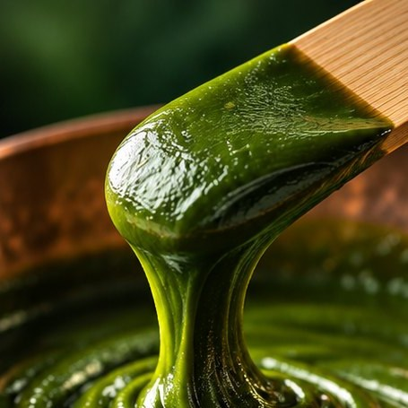

技術・品質
お茶の色・香り・味わいを、使う場面に合わせたかたちへ。
創業以来磨いてきた加工の技術をご紹介します。
着色料を使わず、
お茶の緑を固定する。
ペースト茶は、お茶の色・味・香りを保ったまま、ペースト状に仕上げたお茶です。着色料などの添加物を一切使わずに自然の色を固定しているため、加熱しても緑色を保つことができます。
殺菌を行っているため常温での流通が可能で、仕上がった商品の日持ちの向上にもつながります。現在は抹茶とほうじ茶を中心に、そのほかのお茶もご要望に応じてペーストに加工しています。
ペースト茶ができるまで
受入れ
原料茶葉の状態を確認し、受け入れます。
軟化
乾燥した茶葉を煮て、やわらかくします。
粉砕
粉砕機で、茶葉を均等な細かさに仕上げます。
混合
なめらかで均一なペーストに練り上げます。
殺菌・充填
殺菌して充填。常温での流通が可能です。

銅鍋で、短時間に、
均一に炊き上げる。
彩ペーストは、熱伝導性に優れた銅鍋で丁寧に炊き上げています。短時間で均一に加熱することで、素材の色・香り・風味を最大限に保ち、素材本来の鮮やかな色合いを引き出します。
彩 AYA PASTE を見る日本初の
インスタント茶。
日本緑茶のはじまりは、創業者・吉岡理一が約10年の研究の末に生み出したインスタント茶です。昭和38年の会社設立から現在まで、インスタント茶の製造・販売を続けています。
緑茶・ほうじ茶などのラインナップに加え、1g入りのスティックなど、お客様のご要望に合わせた形態にも対応します。
微粉末から、
粗挽きまで。
土山茶を丁寧に挽いた微粉末茶は、菓子・料理・ドリンクなど幅広い用途に。食感や見た目を活かしたい商品には、粒度を選べる粗挽き茶をご用意しています。
粉砕技術はお茶に限りません。野菜や果物もなめらかに粉砕でき、市場に出せない規格外品の活用にもお役立ていただけます。
粗挽き茶の粒度
| 0.3mm | ふりかけ・生地への練り込みに。舌ざわりが細かく、なじみやすい粒度。 |
|---|---|
| 0.6mm | 焼き菓子やパンに。茶葉らしい見た目と食感を残せます。 |
| 1.0mm | トッピングや和惣菜に。噛んだときに香りが立ちます。 |
| 1.5mm | 茶葉の存在感を楽しむ商品に。 |
※用途は一例です。最適な粒度はご相談ください。
褐変を抑える、
顆粒タイプの抹茶。
抹茶は時間とともに褐変・変色しやすい素材です。抹茶NR／抹茶ザラメは、造粒の際にお茶のエキスを加えることで、その褐変・変色を抑えるように設計した顆粒タイプの抹茶です。
製品紹介を見る品質への取り組み
原料の受け入れから加工、出荷まで、自社の工場で一貫して手がけています。
有機JAS認証
2013年に有機JAS認証を取得。有機原料の加工にも対応しています。
着色料不使用
ペースト茶は着色料などの添加物を使わず、お茶本来の色を活かしています。
自社一貫加工
軟化・粉砕・混合・殺菌まで、自社の設備と技術で加工しています。
用途に合わせた提案
試験データや配合の知見をもとに、商品づくりに合った使い方をご提案します。
業務用・OEMのご相談、
サンプルのご依頼
製菓・製パン・和菓子・飲料メーカー様、飲食店様からのご相談を承ります。用途や配合に合わせた加工もお気軽にお問い合わせください。
TEL0748-67-0215